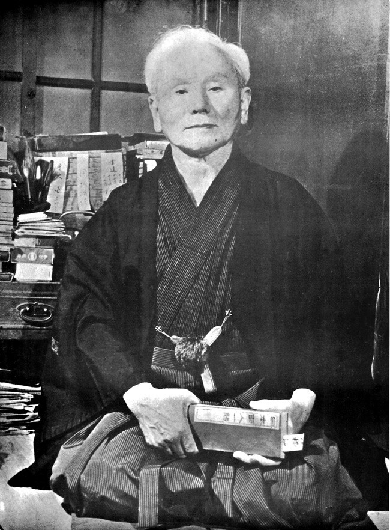

História
O Karate, ou Karate-Do, é uma forma de Budo (caminho do guerreiro). Esta arte marcial japonesa teve a sua origem em Okinawa e foi introduzida nas principais ilhas do arquipélago japonês em 1922. Acredita-se que o Karate é uma mistura de uma arte de luta chinesa, levada até Okinawa por mercadores e marinheiros da província de Fujian, com uma arte própria de Okinawa. No final da dinastia Ming, Okinawa passou a ser dominada pelo Japão, e de forma a evitar a revolução do povo nativo, foram proibidos o uso de armas. Sob pressão militar, a população procurou, nos utensílios do quotidiano e no próprio corpo, os meios para se poderem defender. Surgiram assim os primeiros indícios de uma arte marcial, inicialmente chamada de "tode".
 Karate-Do significa "Caminho da mão vazia" (Kara = Vazio; Te = Mão; Do = Caminho). No Karate não se utilizam armas. As partes do nosso corpo são as armas. O "Do" pode ser entendido como o desenvolvimento emocional e espiritual do praticante. A sabedoria para ser uma pessoa melhor, procurando eliminar do ego as discriminações, o ódio, o egoísmo e a maldade.
O início do século XX transformou a abordagem da luta pela sobrevivência numa forma de educação física com fundamentos espirituais. O Karate deixou de ser ensinado em segredo e, em 1916, o Mestre Funakoshi fez a primeira demonstração pública fora de Okinawa. O Mestre Funakoshi é considerado o pai do Karate Moderno. Viajou por todo o Japão e foi convidado a ensinar a arte em Universidades, onde o Karate passou a ser submetido a pesquisas científicas. Os alunos de Funakoshi construíram um Dojo (Lugar do Caminho) em sua homenagem e deram-lhe o nome de Shotokan (Edifício de Shoto). Shoto era o pseudónimo com que Funakoshi assinava os seus poemas.
Do Japão para o Mundo...e Portugal
Após o sucesso de Funakoshi, outros mestres de Okinawa começaram a divulgar os seus estilos de Karate por todo o Japão. A fusão do Karate com a concepção japonesa da Arte Marcial dá origem aos quatro principais estilos de Karate conhecidos até hoje: SHOTOKAN (Gichin Funakoshi), Shito-Ryu (Mabuni), Goju-Ryu (Miyagi) e Wado-Ryu (Otsuka).
Com a Segunda Guerra Mundial, a emigração dos japoneses e o grande interesse das tropas de ocupação em aprenderem a lutar, difundiram o Karate pelos Continentes. O Mestre Nakayama, tendo estudado directamente sob a tutela de Gichin Funakoshi, e do seu filho Gigo, fundou em 1949 a JKA – Japan Karate Association, dando assim início à maior operação de expansão do Karate para lá das fronteiras do Japão. De modo a tornar esta Arte Marcial mais credível e passível de aceitação no mundo ocidental, Nakayama restruturou as bases do treino de Karate, tendo por base conceitos científicos das ciências do Desporto.
O aparecimento do Karate em Portugal foi alicerçado durante o período de 1962 a 1964, através de um grupo que integrava a Academia de Budo de Lisboa. Estes primeiros passos serviram para fazer vários contatos com organismos internacionais. Após algumas diligências foi possível trazer a Portugal, entre 1964 a 1966, instrutores dos estilos Shotokan e de Shotokai, que ajudaram com grande valia na motivação e na efetivação do treino. A 8 de Janeiro de 1964 foi atribuído, pela União Portuguesa de Budo, ao Dr. Pires Martins, o 1º título de Agente de Ensino de Karate em Portugal. Em Portugal até 1985 o Movimento associativo CDAM – Comissão Diretiva das Artes Marciais - integrava quase todas as Artes Marciais existentes no país. A partir dessa data e até 1992 dá-se a divisão da CDAM, de onde emergem duas instituições que reivindicam a gestão do Karate Nacional: a FPK – Federação Portuguesa de Karate e a FPKDA – Federação Portuguesa de Karate e Disciplinas Associadas. A 15 de Junho de 1992 é fundada por aquelas duas federações a FNK-P – Federação Nacional de Karate – Portugal. Desde então o Karate Português tem procurado desenvolver-se numa outra realidade, sendo o Estatuto de Utilidade Pública atribuído em 1995 à FNK-P, o que significou o reconhecimento (através do INDESP na altura e hoje Instituto Português do Desporto e Juventude, I.P.D.J) da responsabilidade pública da Federação na promoção do Karate Nacional.
Marcas HTML usadas:
- < html > < / html > informar o browser que está perante uma página html;
- < title >< / title > define o título que será apresentado pela página;
- < link >< / link > hiperligação, neste caso para outra página dentro do site;
- < body > < / body > envolve o corpo do documento;
- < div > < / div > definir secções no documento;
- < header >< / header > Secção cabeçalho das páginas;
- < footer >< / footer > Secção de rodapé;
- < nav >< / nav > secção de "navegador", onde estão as hiperligações para o restante site;
- < article >< / article > secção onde consta o conteúdo propriamente dito de cada página;
- < hi >< /h1 > título principal das páginas - onde consta o tema do site;
- < h2 >< / h2 > título da secção do conteúdo;
- < img >< /img > Para a imagem do cabeçalho;
- < p >< / p > para definir parágrafos;
- < i >< / i > para colocar em itálico, por exemplo a palavra "karaté" no primeiro parágrafo do conteúdo;
Marcas CSS usadas:
- Seletor "id=": definição de um id para "formatar" determinada secção definida pela tag < div >;
- Seletor "class=": definição de uma classe de "formatação" ;
- font-family: define a família de fontes que o browser usa;
- background-image: define a imagem de fundo utilizado em todas as páginas do site/cabeçalho;
- text-align: definir alinhamento do texto nas várias secções ;
- text-decoration: definir decoração de um texto/palavra isolada ;
- font-size: define o tamanho da fonte quer nos títulos, secções... ;
- color: define cor dos vários tipos de títulos ;
- color-background: define cor de fundo quer se secções, figuras...;
- padding: define distância às "margens";
- border-style: define os limites das figuras;
- border-color:define a cor do limite das figuras;
- transform: define que transformação os títulos h1 e h2 sofrem quando o rato passar pelos mesmos;
- width:definte tamanho das figuras;